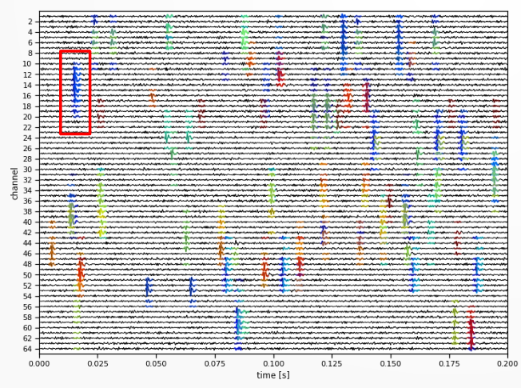

In this chapter, we will implement a spike sorting pipeline from start to finish, using SpikeInterface. We will go through the key steps at a high level here, and develop the theory and add more complex methods and use cases in the following chapters.
In this walkthrough, we will use a short example dataset available for download here. This dataset contains 2.5 seconds of data recorded on 384 channels, with channels located on the middle two shanks of a 4-shank Neuropixels probe, acquired in SpikeGLX.
We will load and preprocess the data, run spike sorting and compute quality metrics for assessing the sorting output.
Let’s get started!
i. Data Loading and Exploration
Data Loading
First, we will load the data, currently saved on our hard drive, into Python.
SpikeInterface can load data from many different types of acquisition systems, using functions within its extractors module. As our data is from SpikeGLX, we will use the read_spikeglx method.
We need to tell SpikeInterface where the data is, and what data stream💡 we want to load. A stream refers to a continuous recording of voltage signals from a specific set of channels, sampled at a fixed rate. SpikeGLX saves different streams to separate files depending on the frequency band and channel type. Streams written by SpikeGLX can include the action potential (AP) band, local field potential (LF) band and a sync stream (depending on the version).
Because we want to load the AP data stream for spike sorting, we pass "imec0.ap".
import spikeinterface.extractors as si_extractors# This should be the path to the folder contaning# the data. On Windows, you may need to preprend# r to the string e.g. r"C:\my\path"path_to_data_folder ="data/pipeline-walkthrough"recording = si_extractors.read_spikeglx( path_to_data_folder, stream_id="imec0.ap")print(recording)
SpikeInterface uses ‘lazy loading’, which means at this stage no data is actually loaded into memory. Data is only loaded when we request it (e.g. for visualisation, or spike sorting) and only the requested chunk is loaded. This makes operations very fast as we do not need to load large recordings up-front.
The Recording object
SpikeInterface extractor functions return the recording as a Python object, which contains many useful methods for exploring the recording metadata as well as accessing the underlying data. In our case, recording is a SpikeGLXRecordingExtractor recording object.
The SpikeInterface API Documentation is a useful resource for looking up methods associated with an object and their arguments. In Spikeinterface, all recordings inherit💡 from the BaseRecording, so checking out the API docs for BaseRecording gives us iformation about all recording objects.
You can also use Python’s dir() functoin to see all attributes and methods associated with any Python object.
print( [method for method indir(recording) if method.startswith("get")])
This is a good time to explore the recording object using the API docs. Have a go at the following:
Print the locations of all channels on the probe.
Print the time vector associated with the recording.
Use get_traces() to retrieve a segment of raw data as a NumPy array. What are its dimensions?
Visualising the probe
There are many brands of recording probes used in extracellular electrophysiology (e.g. Neuropixels, Cambridge Neurotech or NeuroNexus ). There are many models, which come in complex and varied geometries and channel arangements
Under the hood, SpikeInterface uses the ProbeInterface package to load many different types of probe. In our case, it automatically identifie and loaded a Neuropixels 2 (NP2) probe.
It is important to check that the probe has loaded as expected, and that the geometry matches how it was set up in your acquisition software. We can plot the probe to confirm it loaded correctly:
from probeinterface.plotting import plot_probeimport matplotlib.pyplot as pltprobe = recording.get_probe()plot_probe(probe)plt.show()
As expected, we have a 4-shank Neurpixels probe in which all the recording channels are located in the middle two shanks. The argument show_contact_ids can also be used to display the contact IDs, to double check the exact location of each contact.
Visualising the data
Electrophysiological recordings are susceptible to contamination from multiple noise sources: electrical interference, mechanical noise caused by probe movement, and artefacts arising from hardware defects or poor contact.
As such, it is important to visualise the data, especially after preprocessing, to check the data quality. First, lets’s plot one second of data from our raw recording:
return_in_uV to ensure the data is returned in interpretable units (microvolts), as by default most electrophysiological recordings are stored as unitless int16 values💡.
order_channel_by_depth is used as the default ordering of channels on the probe is not always by depth, meaning the order is scrambled on the plot.
As we can see - the raw data looks terrible! It is severely contaminated, mostly by electrical noise. We will need to preprocess it to tidy it up.
ii. Preprocessing
Below, we will apply three key preprocessing steps:
phase_shift : corrects a hardware artefact in the Neuropixels probe which causes small shifts between the recording time across nearby channels.
bandpass_filter : removes high and low frequency oscillations from the data. It is applied to each channel separately.
commmon_reference : removes noise spikes that appear as verticle stripes across the data. It is applied across channels separately at each timepoint.
To preprocess the data, we will pass our recording object into functions that return a new, recording object. e.g. filtered_recording = bandpass_filter(recording). We can do this for every step in the preprocessing chain:
In SpikeInterface, the preprocessing is applied almost instantly due to the ‘lazy’ loading mentioned earlier. When we apply the preprocessing function, we only really just change the metadata associated with the recording, the data is not actually changed at this stage.
Only when we get the data (e.g. in plot_traces, or with get_traces() or when saving the data) is the data preprocessed in the requested chunk. This makes operating very fast!
As you can see, it is much cleaner and we can see action potentials firing! However, there does seem to be an artefact, small gaps in the action potential waveform. We will investigate these in the next section.
Splitting the data by shank
You might notice the data in the above image looks slightly strange. All spikes have predictable gaps between them, we can see this clearly if we zoom into a single action potential waveform:
Look carefully at the plot above. Why do you think there are predictable gaps in the signal every two channels?
NoteClick to reveal the answer
Our recording channels are located on two shanks, however we have plot all recording channels together. The channels on different shanks have the same y-position, so they are plot next to eachother, but different x-positions.
This means that the AP recorded on one shanks channels is interleaved with blank channels from the other shank.
We can solve this by spliting the recording by shank with the groups property. When SpikeInterface loads the data, it will automatically assign different shanks to different groups:
Now we have our preprocessed data, and have visually confirmed the data quality is good, we are ready to perform spike sorting!
TipAdditional things to try
How does the data look using median vs. mean for common_average?
What happens if you set the bandpass filter minimum cutoff to zero? What frequencies are including now? Or set the maximum cutoff to 15000?
Set return_in_uV=False. Does the data look much different?
Save the data to disk with the Recording objects .save attribute
Use get_traces() with and without return_in_uV as True and False to inspect the data type.
Perform spike detection (e.g. absolute threshold method) on the preprocessed data obtained with get_traces()
iii. Sorting
Now we are ready to move onto spike sorting. There are many possible spike sorters to choose from, today we will use Kilosort 4.
All we need to do is pass our preprocessed recording to the sorter of choice, along with any parameters. In our case, we will skip the filtering and common average referencing that Kilosort 4 can perform, as we have already run these steps in SpikeInterface (we cannot turn filtering off, so just set it to a very low cutoff).
Kilosort will then detect spikes and assign each spike to a unit (i.e. a putative neuron). It will output the time of each spike, what unit it belongs to.
In SpikeInterface, running a sorter is quite simple:
from pathlib import Pathimport spikeinterface.sorters as si_sorterssorter_folder = Path("kilosort4_output")sorter_output_folder = sorter_folder /"sorter_output"sorting = si_sorters.run_sorter("kilosort4", cmr_recording, folder=sorter_folder, remove_existing_folder=True, do_CAR=False, highpass_cutoff=0.1,)print(sorting)
KiloSortSortingExtractor: 83 units - 1 segments - 30.0kHz
The sorting output is written to disk. The output contains all of the output files of the sorter, and its organisation is sorter-dependent. As we as spike times and unit assignments, it contains other outputs from the sorter e.g. representative waveforms for each units (‘templates’).
In SpikeInterface, we can access the spike times and unit assignments in a sorter-independent manner, using the sorting object. For example, to get the spike times and unit assignments:
spikes = sorting.to_spike_vector()spike_times = spikes["sample_index"] / sorting.get_sampling_frequency()# show the first 5 spikesprint(f"`spikes` is a structured number array with fields`: {spikes.dtype.names}\n")print(f"First 5 spike times (s): {spike_times[:5]}\n")print(f"First 5 unit assignments: {spikes['unit_index'][:5]}")
`spikes` is a structured number array with fields`: ('sample_index', 'unit_index', 'segment_index')
First 5 spike times (s): [3.33333333e-05 6.66666667e-05 6.66666667e-05 6.66666667e-05
6.66666667e-05]
First 5 unit assignments: [77 3 8 57 68]
TipSome things to try
Get a list of all non-empty unit ids
Remove a unit - what happens to the spikes assigned to this unit?
Get the spike times for a specific unit
iv. Postprocessing
TODO! Depending on timing and content of the other sections, we may want to reduce this down to a single command where we compute all of the extensions, and then go through them in more detail in the SpikeInterface GUI
Spike sorting is a complex task undertaken in the precense of significant noise. Therefore, many units will not cleanly represent a single neuron. As well as good units (i.. where each spike is from the same putative neuron) units may be noise (XXX) or multi-unit activity (MUA).
To determine whether units are good or not, we must look at the individual spikes that belong to a unit, and compute metrics. Cut then out, waveforms. In this section we will go over some key concepts at a very high level - we will develop this much further in the Postprocessing chapter.
Creating a SortingAnalzyer
The SortingAnalzyer is the key object for postprocessing in SpikeInterface. We can create the SortingAnalzyer by passing the sorting output and preprocessed recording:
from spikeinterface import create_sorting_analyzeranalyzer = create_sorting_analyzer( sorting=sorting, recording=recording)
Using this sorting analyzer interface, we will compute all of the postprocessing results needed to assess the quality of our sorting.
Some sorters will output their own waveforms, templates, amplitudes ETC (for example, Kilosort has a templates.npy file containnig the templates it generated during sorting).
These are not loaded by SpikeInterface. Instead, the sorting analzyer will always recompute these features directly from the passed recording.
Selecting spikes
In our sorting, we can have many many detected spikes. This may be in the order of millios of spikes for an hour long recording.
In general, we will compute summary statistics over metrics computed from individual spikes. Therefore, including millions of spikes is computationally intensive while providing marginal gains. Instead, we can subselect spikes to include in postprocessing computations (typically, 3-500 spikes per unit is used a default).
<spikeinterface.core.analyzer_extension_core.ComputeRandomSpikes at 0x176bac1d2b0>
To access the data assicated with a computed extension, we can use the get_extension function as below. We can see the indices (and compute the spike times) for the selected spikes:
The action potential waveforms are important for assessing unit quality. For example, we expect that the waveforms of spikes which belong to a single unit are all similar.
To compute waveforms in SpikeInterface, we can use the waveforms extension. This will ‘chop out’ the spike waveform from the data, with a time window specified by the ms_before and ms_after (the spike peak) arguments. For example in the schematic below, we could cut out the blue spike in a window defined by the red blox:

Example raw trace segment with an artifact highlighted in red.
The template is a representative wavecform from a putative neuron. Often, it is computed as the average waveform from all of the spikes that were assigned to a unit.
We can compute the extension and access the templates with:
Finally, spike amplitudes are a useful measure for assessing unit quality. We expect that the amplitude of a spike is relatively stable througghout a recording. Changes in spike amplitudes may indicate problems with hte neuron health, drift, or other issues.
This gives a list of amplitudes, one for every spike. We will explore how visualisng spike amplitude across time is a useful measure for quality asessment later.
v. Manual Curation in spikeinterface-gui
From this, we can compute quality metrics used to filter the units e.g. bombcell. We cover this more in the postprocessing chapter.